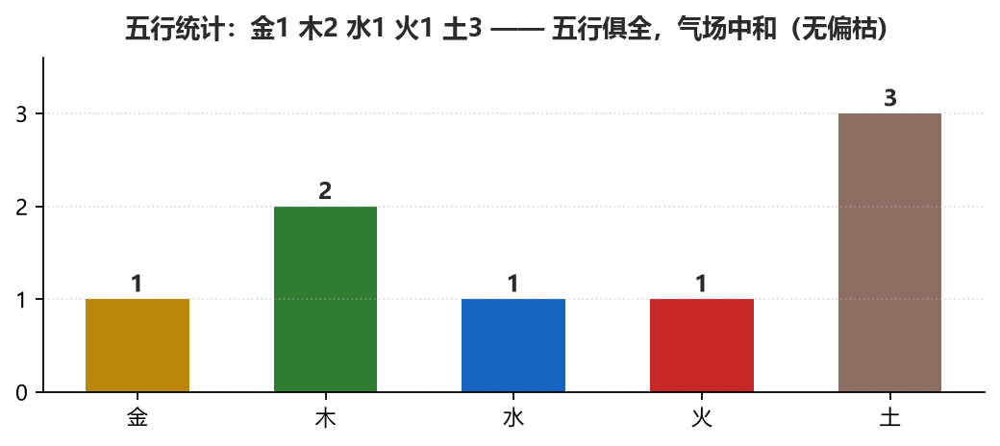
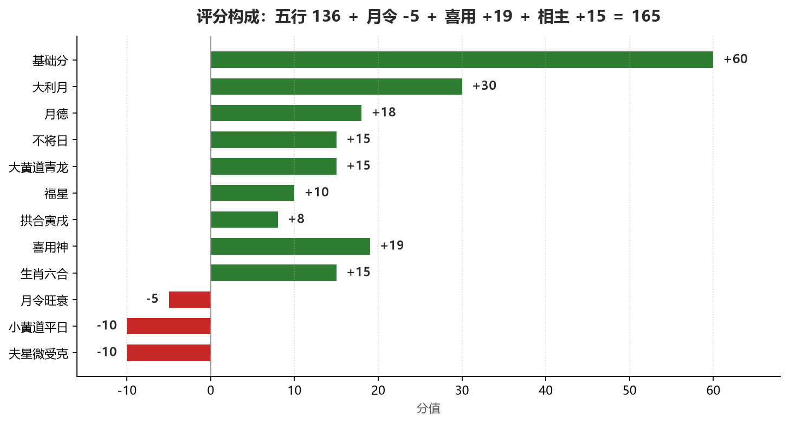
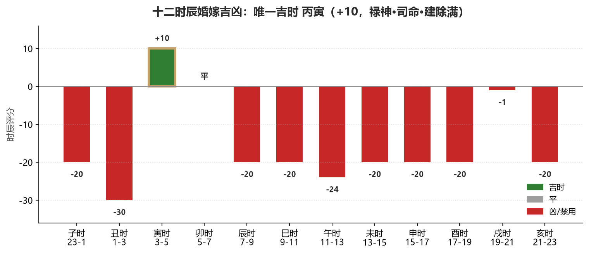

| 身份 | 姓名 | 生肖 | 生辰四柱 | 喜神 / 用神 |
|---|---|---|---|---|
| 新娘 | 欢 | 己卯年（兔） | 己卯 丁卯 丁亥 癸卯 | 喜神：水、金 ｜ 用神：水 |
| 新郎 | 文旺 | 戊寅年（虎） | 戊寅 壬戌 癸巳 壬子 | 喜神：金、水 ｜ 用神：金 |
行嫁月：兔女大利月为正月、七月，小利月为六月、十二月。本日农历七月初九，正处 大利月，为嫁娶月令中的最高档。

建除十二神值「平」，小黄道黑道日，通书列「宜修饰垣墙、平治道涂，忌嫁娶安葬」。 故等级由「上吉」降星一档为「大吉（小忌，降一格）」。
制化：建除平日忌大动干戈，但作为迎娶进门，平稳正是所求——不要在本日安排 动土、拆改、大规模搬移与新床重装，把仪式控制在「迎娶、拜堂、进门」的平稳动线上， 平日之忌即由「动」转为「静」，反成稳顺之象。
年干庚金克日主甲木夫星（女命以年干通书法取甲木为夫星），为「微受克」，非重克。 日课同时见天德、月德，综合评语已判「夫星微受克得天德、月德化解」。
制化：取丙寅时迎娶——寅为甲木禄神，丙火制庚金、护卫夫星， 且大黄道司命、建除满，是当日唯一吉时（+10）。
再提示：本日「年柱戌 与 日柱戌 伏吟」，属日课内部伏吟（非事主年命伏吟）， 主土气偏重，已体现在五行与夫星评估中；因天德、月德并见，不作否决，按小忌处理。 另「戌未三刑」为恃势之刑，得寅戌拱合火局通关，凶性大减。

【评分详情】
━━━━━━━━━━━━━━━━━━━━━━━━━━━━━━━━━━━━━━━━
五行评分：136 分
基础分：+60 分
大利月：+30 分
不将日：+15 分
月德：+18 分
福星：+10 分
大黄道青龙日（黄道吉日）：+15 分
小黄道平日（黑道凶日）：-10 分
本命三煞：新郎年命寅（三煞位：亥子丑）未犯；新娘年命卯对照，日支戌犯其本命三煞之岁煞位——依《陈子性藏书》页799"本命三殺其例只论男命不论女命"，女命不参与扣分，仅对照展示
夫星微受克（金天干年柱庚克制木夫星）：-10 分
拱合局(寅,戌，拱午)：+8 分
纳音匹配：嫁娶评分体系不含此分项，属评分架构差异
月令得分：-5 分
├─ 旺衰得分：-5 分（甲木在未月处囚地，失令）
└─ 支支关系得分：+0 分（月支未与日支戌无特殊关系）
喜用神得分：+19 分
生肖相主得分：+15 分
（相主为硬门槛项（冲夫妻宫/年命冲即否决），相主得分已并入总分）
• 新娘生肖卯与日课日支戌相合（年支合），+15分
事主匹配（喜用神）：
• 新娘：（+9分）天干金=喜神+3，天干水=用神+5，藏干金=喜神+1
• 文旺：（+10分）天干金=用神+5，天干水=喜神+3，藏干金=用神+2
黄道得分：已并入五行评分（大黄道/小黄道明细见五行评分项内）
【太阳太阴到山到向】
（本事项未提供山向，日月到山到向不适用；相关加分仅山向类事项单轨登记）
【📖 专业提示与禁忌】
⚠️ 三不赦警示：岁破、三煞、五黄为择日公认的“三不赦”结构性大凶。即使太阳太阴到山到向，遇此三煞临山或临向，日月光辉亦难压制，绝不宜用事。
🌙 太阴到向争议：太阴到向存在流派争议。部分观点认为月建天帝到山为吉，到向形成“冲山”之势反凶；也有流派认为山向皆可。故非绝对百无禁忌，用事请结合师承。
👑 身份与承受力：《协纪辨方书》指明，太阳到山过于尊贵，多利国家修造，平民用事可能反招不利。相较之下，太阳到向或太阴到山到向，对平民更为稳妥。
─────────────────────────────────
计算公式：136 -5 +19 +15 = 165 分
总分：165 分
玄空飞星：本事项非山向类，玄空飞星段不适用
【月令分析】
━━━━━━━━━━━━━━━━━━━━━━━━━━━━━━━━━━━━━━━━
甲日主属木气，月支未非木气得令之月，日主失令（木克当令之气，反受令困，处囚地），惟月干癸（水气）生扶，仍得根气，稍解失令之势
【四柱八字】
━━━━━━━━━━━━━━━━━━━━━━━━━━━━━━━━━━━━━━━━
年柱: 庚戌 月柱: 癸未
日柱: 甲戌 时柱: 丙寅 （系统择定推荐时柱）
【天干五行】
年干: 庚 月干: 癸 日干: 甲 时干: 丙
【地支五行】
年支: 戌 月支: 未 日支: 戌 时支: 寅
💡 提示：时柱为系统择定的推荐用柱，实际用课请参考下方【十二时辰吉凶】做二次确认
【五行分析】
━━━━━━━━━━━━━━━━━━━━━━━━━━━━━━━━━━━━━━━━
五行评分: 136 分
【天干地支五行】
年柱: 庚(金) 戌(土)
月柱: 癸(水) 未(土)
日柱: 甲(木) 戌(土)
时柱: 丙(火) 寅(木)
【地支关系】
• 时柱寅 与 年柱戌、日柱戌 拱合火局（拱午）（合局计分已并入五行评分，与推荐时柱合局不双计，分值详见评分详情）（推荐时柱，冲合刑害不计入日课总分，详见十二时辰吉凶）（命理流派名目，地支仍按合局算）
• 年柱戌 与 日柱戌 伏吟（戌戌伏吟）
• 年柱戌、月柱未、日柱戌 三刑-恃势之刑（戌未）
【十二长生】（日干在各柱地支的长生旺衰，分值计入五行评分）
年柱: 养
月柱: 墓
日柱: 养
时柱: 临官
【纳音五行】
年柱: 钗钏金
月柱: 杨柳木
日柱: 山头火
时柱: 炉中火
【吉神】
✓ 天德贵人: 月支未见日干甲
✓ 月德贵人: 月支未见日干甲
✓ 天乙贵人: 日干甲见月柱未
✓ 福星贵人: 日干甲见时柱寅
✓ 禄神: 日干甲见时柱寅
【日主旺衰】
日主甲在月令未中为墓，土旺耗木，日主失令偏弱
【五行生克】
• 金生水: 年柱庚(金)与月柱癸(水)
• 金克木: 年柱庚(金)克日柱甲(木)
• 火克金: 时柱丙(火)克年柱庚(金)
• 水生木: 月柱癸(水)与日柱甲(木)
• 水克火: 月柱癸(水)克时柱丙(火)
• 木生火: 日柱甲(木)与时柱丙(火)
【五行偏枯分析】 ━━━━━━━━━━━━━━━━━━━━━━━━━━━━━━━━━━━━━━━━ 五行统计: 金 1 ｜ 木 2 ｜ 水 1 ｜ 火 1 ｜ 土 3 偏枯判定: ✅ 平衡 - 五行俱全，气场中和。 格局解析: 五行流通，气场中和，无需刻意调候。
【三元合参：日课 · 山家 · 事主】
━━━━━━━━━━━━━━━━━━━━━━━━━━━━━━━━━━━━━━━━
⛰️ 日课与山家：—（本事项不涉及坐山）
👤 日课与事主：日课五行补益事主喜用神（总+19分：新娘（喜用水）+9、文旺（喜用金）+10）；新娘生肖卯与日课日支戌相合（年支合）（+15分）（注：主命喜六合，主恩爱和合；三合向外——协纪·利用篇） ✅
🧭 山家与事主：—（无坐山或事主年命，不参评）
📌 综合结论：日课生扶事主，本事项不涉坐山，人和天时兼得，可用。
【黄道信息】
━━━━━━━━━━━━━━━━━━━━━━━━━━━━━━━━━━━━━━━━
大黄道: 青龙 (吉) +15分
说明: 黄道吉日，诸事皆宜
小黄道: 平 (凶) -10分
说明: 平日，宜修饰垣墙、平治道涂，忌嫁娶安葬等
黄道等级: 次吉
黄道综合分: +5 分
综合说明: 大黄道值日青龙，黄道吉日，诸事皆宜；小黄道平，平日，宜修饰垣墙、平治道涂，忌嫁娶安葬等
【宜忌信息】
━━━━━━━━━━━━━━━━━━━━━━━━━━━━━━━━━━━━━━━━
口径：宜项来自通书黄历/吉神/建除宜等多层；遇冲突时硬门槛优先——
相主（事主生肖、日柱冲刑）、三煞、山家封禁、建除当日之忌优先于通书宜项，
通书宜项不覆盖硬性禁忌（硬门槛未犯时方以通书宜项为用）。
宜: 月德日, 不将日, 天德, 嫁娶
忌: 建除平日, 小黄道平日（黑道凶日）, 夫星微受克（金天干年柱庚克制木夫星）
【神煞信息】
━━━━━━━━━━━━━━━━━━━━━━━━━━━━━━━━━━━━━━━━
【吉神(加分项)】
✓ 大利月（+30分）: 新娘大利月（农历7月）
✓ 天德（+20分）: 天德吉星，诸凶皆解
✓ 月德（+18分）: 月德吉星，诸事皆宜
✓ 不将日（+15分）: 不将日吉
✓ 天乙贵人（+15分）: 天乙贵人临月柱，主逢凶化吉、贵人扶持
✓ 福星（+10分）: 福星贵人（日干甲见时支寅，时干为食神）
✓ 要安（+8分）: 要安主安宁
✓ 五合日（+8分）: 五合日婚嫁吉
【凶煞(减分项)】
✗ 小黄道平日（黑道凶日）（-10分）: 小黄道平日（黑道凶日）
✗ 夫星微受克（金天干年柱庚克制木夫星）（-10分）: 夫星微受克（金天干年柱庚克制木夫星）
【其他神煞】
○ 黄幡（+0分）: 黄幡主缠绕（岁神方位，日辰仅识别展示，不计分）
【综合评语】
━━━━━━━━━━━━━━━━━━━━━━━━━━━━━━━━━━━━━━━━
嫁娶要点：基础分；大利月；不将日；月德；福星；大黄道青龙日（黄道吉日）；扣分：小黄道平日（黑道凶日）；夫星微受克（金天干年柱庚克制木夫星）
宜：月德日、不将日、天德、嫁娶
忌：建除平日、小黄道平日（黑道凶日）、夫星微受克（金天干年柱庚克制木夫星）
月令分析：甲日主失令（木克当令之气，反受令困，处囚地）；日主：日主甲在月令未中为墓，土旺耗木，日主失令偏弱；地支合局：时柱寅 与 年柱戌、日柱戌 拱合火局（拱午）（合局计分已并入五行评分，与推荐时柱合局不双计，分值详见评分详情）；地支冲害：年柱戌、月柱未、日柱戌 三刑-恃势之刑（戌未）；命局吉神：天德贵人: 月支未见日干甲；月德贵人: 月支未见日干甲；天乙贵人: 日干甲见月柱未；福星贵人: 日干甲见时柱寅；禄神: 日干甲见时柱寅；月令：失令，日主乏力；喜用神：日课对事主补益较大；大黄道青龙，黄道吉日，诸事皆宜；吉神：大利月、天德、月德、不将日、天乙贵人、福星、要安、五合日；伏吟：年柱戌 与 日柱戌 伏吟（戌戌伏吟），土气加重，夫星更受耗；虽有天德月德等吉神支撑，然夫星受耗，嫁娶须有制化或另择吉时；宜：月德日、不将日、天德、嫁娶；综合判断：建除平日、小黄道平日等须避，然大利月、天德、月德并见，建除平日得天德、月德化解，小黄道平日得天德、月德化解，夫星微受克得天德、月德化解，嫁娶可用，须于十二时辰中择吉时；日主虽失令，喜用神得补，整体吉中带弱；等级因建除黑道、夫星等嫁娶小忌降星一档，详见等级行
【嫁娶择日分析】
━━━━━━━━━━━━━━━━━━━━━━━━━━━━━━━━━━━━━━━━
新娘：己卯年生（兔）
新郎：戊寅年生（虎）
【利月分析】
大利月：正月、七月
小利月：六月、十二月
当前月份：大利月（+30分，农历7月）
【利月神煞】
• 大利月（+30分，已计入五行评分）: 新娘大利月（农历7月）
【吉日神煞】
✓ 不将日（+15分）: 不将日吉
✓ 五合日（+8分）: 五合日婚嫁吉
【凶日神煞】
✗ 小黄道平日（黑道凶日）（-10分）: 小黄道平日（黑道凶日）

| 标记 | 时辰 | 时段 | 评分 | 吉凶要素 |
|---|---|---|---|---|
| ✗ | 甲子时 | 23-1 | -20 | 害月支（子害未）；冲阴胎（子午冲，禁用）；大黄道天牢；建除建 |
| ✗ | 乙丑时 | 1-3 | -30 | 刑年支（丑刑戌）；刑月支（丑刑未）；刑日支（丑刑戌）；贵人时；大黄道玄武；建除除 |
| ★ | 丙寅时 | 3-5 | +10 | 禄神时；大黄道司命；建除满 |
| 丁卯时 | 5-7 | 平 | ||
| ✗ | 戊辰时 | 7-9 | -20 | 日破时（禁用）；大黄道青龙；建除定 |
| ✗ | 己巳时 | 9-11 | -20 | 冲新娘夫妻宫（巳亥冲，禁用）；红鸾时；大黄道明堂；建除执 |
| ✗ | 庚午时 | 11-13 | -24 | 五不遇时（用课须再权衡）；半合新郎；大黄道天刑；建除破 |
| ✗ | 辛未时 | 13-15 | -20 | 刑年支（未刑戌）；刑日支（未刑戌）；贵人时；半合新娘；冲阳气（未丑冲，禁用）；大黄道朱雀；建除危 |
| ✗ | 壬申时 | 15-17 | -20 | 冲新郎（禁用）；大黄道金匮；建除成 |
| ✗ | 癸酉时 | 17-19 | -20 | 害年支（酉害戌）；害日支（酉害戌）；冲新娘（禁用）；大黄道天德；建除收 |
| ✗ | 甲戌时 | 19-21 | -1 | 刑月支（戌刑未）；合新娘；半合新郎；大黄道白虎；建除开 |
| ✗ | 乙亥时 | 21-23 | -20 | 半合新娘；合新郎；冲新郎夫妻宫（亥巳冲，禁用）；天喜时；大黄道玉堂；建除闭 |
【日课校验】 ━━━━━━━━━━━━━━━━━━━━━━━━━━━━━━━━━━━━━━━━ ✅ 通过 18 项 · ❌ 失败 0 项 · ⏭ 跳过 2 项（共 20 条规则） （跳过规则：E207(嫁娶路径已启用轻量总分恒等式（136-5+19+0+15=165，校验通过）)、E206(结论已含既成制化/化解说明)） 校验结论：✅ 通过
下表为同一对新人在 2027–2036 年、行嫁月（农历 1/6/7/12）内，按每日推荐时柱重算的 Top 候选。2030-07-19（乙卯日）因新娘年命伏吟已升级为一票否决，不再进入榜单。
| 日期 | 四柱（推荐时柱） | 总分 | 等级 | 残余小忌 |
|---|---|---|---|---|
| 2030-08-07 | 庚戌 癸未 甲戌 丙寅 | 165 | ★★★★ 大吉（小忌，降一格） | 小黄道平日（黑道凶日）(-10)、夫星微受克（金天干年柱庚克制木夫星）(-10) |
| 2032-07-27 | 壬子 丁未 甲戌 丙寅 | 169 | ★★★★★ 上吉 | 小黄道平日（黑道凶日）(-10)、六害: 年柱子害月柱未(-6) |
| 2033-07-22 | 癸丑 己未 甲戌 丙寅 | 167 | ★★★★★ 上吉 | 小黄道平日（黑道凶日）(-10)、三刑(恃势之刑): 年柱丑, 月柱未, 日柱戌(-8) |
| 2034-07-17 | 甲寅 辛未 甲戌 丙寅 | 162 | ★★★★ 大吉（小忌，降一格） | 小黄道平日（黑道凶日）(-10)、夫星微受克（金天干月柱辛克制木夫星）(-10) |
| 2035-08-05 | 乙卯 癸未 戊戌 乙卯 | 156 | ★★★★★ 上吉 | 小黄道平日（黑道凶日）(-10) |
| 2027-07-18 | 丁未 丁未 戊戌 乙卯 | 133 | ★★★★★ 上吉 | 小黄道平日（黑道凶日）(-10) |
注：十年内不存在「零扣分且零建除忌项」的绝对完美日；上表前列均带「建除平日/收日」这一微小瑕疵。 软件按「宁可缺位、绝不造假」原则，不做人为提分。